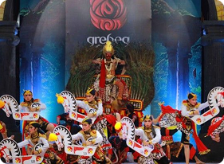

Festival Nasional Reog Ponorogo
Nasional Reog Ponorogo adalah acara tahunan di Kabupaten Ponorogo, Jawa Timur. Acara ini merupakan kompetisi dan pameran seni yang bertujuan untuk melestarikan dan mempromosikan seni Reog Ponorogo, salah satu seni budaya di Indonesia.
Para Peserta dari berbagai daerah menampilkan pertunjukan Reog terbaik mereka. Penilaian meliputi gerak tari, kostum, dan musik pengiring yang unik. Festival inijuga sering dimeriahkan dengan acara pendukung seperti pameran dan karnaval.
Festival ini berperan penting dalam menjaga kelangsungan seni Reog Ponorogo sebagai warisan budaya. Event ini tidak hanya menjadi ajang unjuk kebolehan, tetapi juga sarana edukasi dan promosi budaya kepada masyarakat luas.


27 Juni 2026

Panggung Utama Alun-alun Kabupaten Ponorogo

4.000 Penonton

Ikuti pelatihan tari tradisional dari Jawa seperti tari di Yogya dll.

Pelajari alat musik tradisional Jawa seperti gamelan, angklung, dan sasando.

Belajar membuat batik, ukiran kayu, dan kerajinan tradisional lainnya.

Berpartisipasi dalam pelestarian budaya melalui dokumentasi digital.